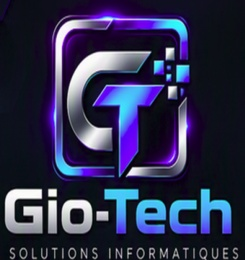

Outlook
Configuration, synchronisation et résolution des problèmes de messagerie.

Gio‑TechSOLUTIONS INFORMATIQUESMICROSOFT 365 À QUÉBEC
Gio‑Tech accompagne les particuliers, travailleurs autonomes et PME dans l'utilisation des outils Microsoft 365. Outlook, Teams, OneDrive, SharePoint et configuration complète de comptes Microsoft.
NOS EXPERTISES
Nous desservons Québec, Lévis, Beauport, Charlesbourg, Sainte‑Foy et les municipalités environnantes.
Configuration, synchronisation et résolution des problèmes de messagerie.
Assistance pour les réunions, le partage d'écran et la collaboration.
Synchronisation de fichiers et sauvegarde dans le nuage.
Gestion documentaire et partage de fichiers pour les équipes.
Authentification multifactorielle et protection des accès.
Mise en place complète de votre environnement Microsoft.
POURQUOI CHOISIR GIO‑TECH
Grâce à plus de 14 ans d'expérience en technologies de l'information, Gio‑Tech accompagne les utilisateurs dans l'utilisation des solutions Microsoft. Notre objectif est de simplifier les outils technologiques afin qu'ils deviennent des alliés au quotidien.
TARIFICATION
SERVICES MICROSOFT À QUÉBEC
Gio‑Tech offre du support Microsoft 365 à Québec, Charlesbourg, Beauport, Sainte‑Foy, Lévis et L'Ancienne‑Lorette. Que votre besoin concerne Outlook, Teams, OneDrive ou SharePoint, nous proposons un accompagnement adapté à votre réalité.
ENTRONS EN CONTACT
Décrivez votre besoin et nous communiquerons avec vous dans les meilleurs délais.